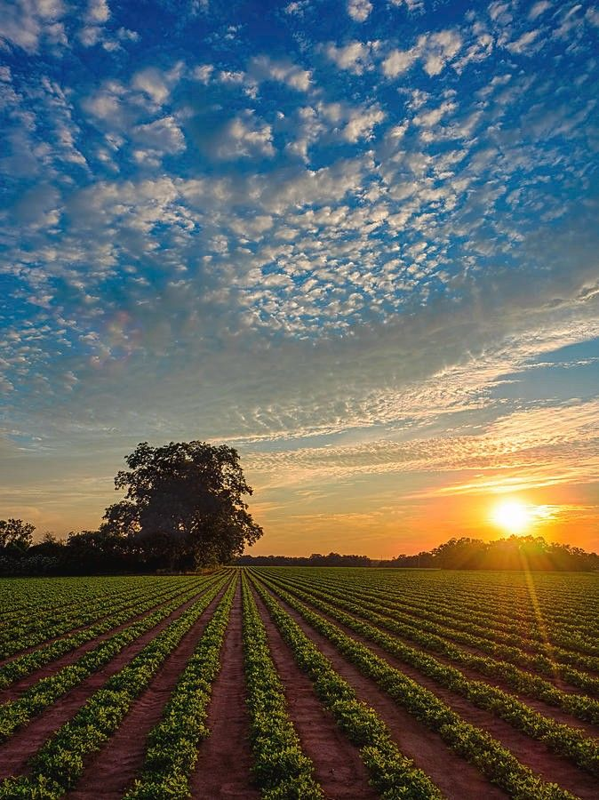

Um agro forte nas plantações é aquele que consegue produzir mais,
utilizando melhor os recursos disponíveis, respeitando o meio ambiente
e transformando o potencial da terra em riqueza real para o país.
É a tradição se reinventando a cada safra.
